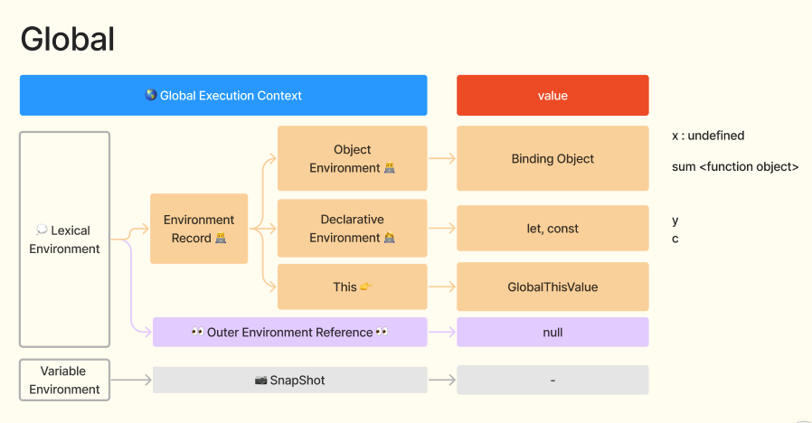

javascript 2일차
Hello, world!
-
내장함수
- 사용자와의 상호작용을 하는 빌트인 function
- alert() : 확인
- confirm() : 취소 / 확인
- prompt() : 입력 - html의 input과 같음
-
내장함수 특징
- 브라우저(window)가 제공해주는 기능
- window가 생략된 것
- window.alert()
- window.confirm()
- window.prompt()
- window.console.log()
-
스크립트 위치
- 인라인 방식 : 유지보수, 재사용성 떨어짐
- 내부 방식 : 유지보수 좋지 않음
- 외부 방식 : 굿 초이스
-
모던 마크업
- type="text/javascript" : 오래된 버전
- type에 스크립트가 들어가면 예전 것
- type="module" : 요즘 많이 사용하는 방식
-
외부 스크립트
- CDN : Contents Delivery Network
- 네트워크상에 올라간 내용을 가져와서 사용하는 것
-
별도에 파일에 스크립트 작성시 스크립트 다운로드 후 캐시에 저장.
성능상 이점 있음 !!
-
성능상 이점 : 이전에 해당 사이트에 방문한 경험이 있는 경우
(처음은 무조건 다운로드 받음)
-
사실 무조건 좋은건 아님. 캐시에 쌓인 데이터를 수정해도 반영이
안되는 경우가 있음
- 껐다 키거나 강력 새로고침쓰 갈겨
- 그럼 사용자는 강력 새로고침쓰 모르면 ... ?
-
예전 방식 : style01190938.css (파일명에 시간까지 기록;; - 새로운
파일로 인식함)
-
요즘 방식 : 번들러가 압축할 때 애초에 파일 이름을 aj4asc1
이런식으로 해시값을 랜덤으로 만듦 - 사용자는 캐시에 대한 고민
하지 않아도 됨 따봉 번들러야 고마버~
코드 구조
-
문
-
문 : 값을 반환하지 않음 (for, while, for..in, for..of) = { ... }
- 식 : 값을 반환함 (삼항식, 이항식, 단항식)
-
세미콜론
-
'암시적' 세미콜론 : 자바스크립트는 줄바꿈이 생기면 자동으로
세미콜론을 삽입함
- 대부분 줄바꿈은 세미콜론으로 인식되지만, 항상은 아님
-
암시적 : 자스는 암시적으로 변환하는 것이 많은 자유로운 언어 =>
언제 암시적으로 변하는지 잘 파악해야함
- 암시적 인터뷰 질문 단골쓰 ~
-
자스 엔진이 알아서 세미콜론 넣어주겠지? 뒤통수 예시 : 대괄호
앞에는 세미콜론이 있다고 가정하지 않음 > 단일문 처리
- 줄바꿈 해도 세미콜론 넣는 것을 권장함 : prettier로 해결
-
주석
- 한줄 주석 : 문/식 뒤에도 입력 가능
-
주석 달기를 두려워마되, 설명용으로 주석을 사용하는 것은 지양
(변수, 함수이름으로 설명이 되도록)
-
주석 관련 vs 확장자
- Comment Divider : 구분 주석 확장자
- Nested Comments 이중 주석 확장자
- Hide Comments : 주석 끄기 확장자 - 남의 코드 볼 때 편리함
변수와 상수
-
변수
- 선언과 할당 구분
-
single let pattern : let user = 'sozzang', (줄바꿈) age = 100
- 한 줄에 한 개의 변수 작성하는 것 권장 !
- dot log : 디버깅 편하게 해주는 확장자
-
할당 되지 않은 변수
- 참조시 undefined
- 호이스팅과 구분필요 ! 호이스팅이 뭔지는 아래에서~
-
객체 중심 방식 vs 함수 중심 방식
- 객체 중심 : 어려버
- 함수 중심 : 사용 예정 - react hook 관련됨
-
함수 중심 방식이 함수형 프로그래밍은 아님,,, ~ 무슨 말일까 ?
-
변수 명명 규칙
-
_ : 사용되지 않거나 숨김 프로퍼티인 경우 주로 사용함 (하지만
lodash 라이브러리일 가능성 있으니 주의)
-
상수
-
1) 코드 실행 전 이미 그 값을 아는 상수 2) 런타임 과정에서
계산되어 할당 이후 변하지 않는 상수
-
1) 런타임 이전에 값을 알고 있는 경우, 하드 코딩한 값 => 찐상수 =
대문자 상수 (예시 COLOR_WHITE: #fff;)
- (런타임 : 웹브라우저가 코드를 해석하는 시간)
-
대문자 상수 장점 : 기억하기 쉽고, 오타 확률 적음, 코드 가독성
증가
-
2) 런타임 이후에 값이 변하지 않는 경우, 동적으로 값 받음 =>
소문자 상수 (예시 pageLoadTime: .3;)
- 상수이기 때문에 = 할당 연산자 바로 옆의 값을 못바꿈
- const a = 'hello' : 'hello' 못바꿈
- const b = { ... } : {} 못바꿈, 객체 안의 내용물 변경 가능
-
객체 값이 바뀌면 위험한거 아녀? b.name.freeze() 해서 동결시킴
-
바람직한 변수명
-
emailFormSubmitButton : 이름이 길어지더라도 1달뒤에 봐도 어떤
값을 담고 있을지 알아야 함
-
data, value 등은 함수 블럭 안에서는 사용하기도 함(함수
블럭에서만 유효하기 때문에)
-
name : 이미 정의되어 있는 이름 ! window.name 하면 값이 있음 ;
몰랐음 ; 그래서 선이 그어지는 것 ~
- var name => window.name 도 변경됨
- let name => window.name 은 변경 안됨
- translator : 한글을 영문으로 번역해주는 확장자
-
여부 관련 변수명 : true, false가 들어가는 경우가 많아서
관례적으로 is, has로 시작하는 경우가 많음
-
참조에 의한 복사 맛보기
- 원시값 복사 => 같은 값을 만들어서 복사됨 (원본 따로)
- 객체 복사 => 같은 값 복사됨 (원본을 참조)
엄격모드 (use strict)
-
엄격모드가 뭔디
-
ES5의 변경사항 대부분이 기본 모드에선 활성화되지 않도록 설계됨 =
Sloppy Mode
- 엄격 모드를 사용해야만 변경사항이 활성화됨
-
스크립트 최상단에 "use strict" => 작성시 모던 방식 (Strict Mode)
- 주석 제외 코드가 use strict 상단에 있으면 활성화 안됨
- 한번 사용하면 절대 취소 못해 !!
-
Sloppy Mode
- 모던이 아닌, ES5의 변경점이 적용되지 않은 모드
-
꼭 사용해야해 ... ?
- 꼭 안써도돼 ~
- 클래스와 모듈을 사용한다면, 자동으로 use strict 적용됨 !
- 날 것(공부용)의 환경에서 개발한다면 굳이?
-
실제 환경(번들러, 모듈)에서 개발한다면 use strict는 기본값임 =
생략 가능
- 나중에 보면 모든지 다 use strict이다.
- 모듈쓰
- script type="module" 이렇게 작성해서 사용함
- 모듈쓰 안에선 this도 window가 아닌 undefined 반환됨
- 모듈쓰는 전역을 보호한다잉
전역 객체
-
같은 말쓰
- browser = window = viewport = global object = 전역 객체
-
브라우저와 노드에서의 전역 객체
- 브라우저 전역 = window
- 노드 전역 = global
-
노드 실행하기 : node server/index.js > window is not defined
- 전역 객체의 이름을 globalThis 표준으로 등록됨 : 2019년
-
전역 객체는 빌트인 함수를 담고 있는 애
-
폴리필
- 공간을 메꿀 때 쓰는 솜
- 해당 기능이 빵꾸난 익스를 위한 대체 코드 ? ? 같은 느낌
-
Promise가 없다면 window.promise = ... 하고 직접 기능을 만들어줌
-
전역을 오염시키지 말자
-
var로 변수를 선언하면 전역 객체에 바인딩됨 = 전역을 오염시킴
- let, const는 전역(window)에 바인딩 안됨
-
프로젝트 전체에 필요한 변수라도 전역으로 관리하는 것이 아니라,
전역 상태관리로 하는 것이 가장 안전함
Legacy var (⭐️)
-
var의 특징
-
남이 짠 스크립트 중간 중간에 var가 나오면 그건 괴물이니까 도망쳐
-
var : 블록 스코프가 없음
-
블록 : { ... } = 문(문법) - 앞에 변수 없음 (for, while ...)
- 객체 : const a = { ... } - 앞에 변수를 받음
- 스코프 : 변수의 유효범위, 변수를 확인할 수 있는 유효 범위
-
블록 스코프 : 블록이 기준이 되어 블록안>밖X 밖>안X, 블록은
울타리라서 안<>밖으로 넘나들 수 없음
-
var : 울타리 걍 뿌셔 - 블록문 안의 변수가 전역 변수처럼 사용됨
- let, const : 울타리 못 넘어 - 전역을 오염시키지 않음
-
var : 함수 스코프에 갇힘
- 함수 안에서 할당된 var는 함수 밖에서 참조하지 못함
-
var : 변수의 중복 선언 허용
-
중복 사용해도, 에러 발생하지 않고 참조하면 마지막으로 할당된
값이 반환됨
-
var : 선언하기 전 사용할 수 있음
- 오잉? 레거씌 ~ 바에선 됨
- 이유 : 위로 끌어올려진 것처럼(호이스팅) 작동하기 때문에
실행 환경 (Execution Context)
- 피그마 참고 
-
전역 실행 환경 (Global Execution Context)
- 나 : js 파일 완성! 저장 ~
-
브라우저 : 자스엔진으로 파일을 해석 해야되니까 실행환경 만들어라
-
ㄴ 전역 실행 환경 : 자스가 연결되어 있다면, 최초 1회 실행됨
- ㄴ 가장 바깥쪽에 있기 때문에 '전역' 실행 환경이라고 함
- 실행 환경 : var는 저기로~ let은 저기로~ (나눔)
-
Lexical Environment : 어휘적 환경 (말로 표현할 수 있는)
- 전역 실행 환경 내에 보이진 않지만 말로 표현 가능한 환경
-
var : 환경기록장치 > Object Environment > Binding Object(전역
객체)
-
let, const : 환경기록장치 > Declarative(선언부) Environment >
let, const
-
함수 : 환경기록장치 > Object Environment > Binding Objett(전역
객체)
- ㄴ 엥 윈도우에 바인딩? 그럼 window.sum() 가능? 가능 ..!
-
Binding Object
- 윈도우에 바인딩된 변수는 초기값(undefined)을 할당받음
- ㄴ 개발자는 아~무것도 안해도 undefined 할당받음
-
선언 이전에 참조 : console.log(a); var a = 10; // undefined :
호이스팅되어 초기값 할당됨 (10은 할당전)
-
Declarative(선언부) Environment
- 그 어떠한 값도 할당받지 않음 = 초기값 자체가 없음
-
선언 이전에 참조 : console.log(a); let a = 10; // x is not
defined : 너 선언만 했잔; 정의된게 없잔;
-
= Temparol Dead Zone (TDZ) : 임시 사망(사각) 지역 (공식 문서엔
없음)
-
ㄴ 선언부 환경으로 끌어올려져 초기값 없이 선언만 호이스팅된
상태, 런타임에 할당문이 실행되기 전
-
호이스팅
-
자바스크립트는 모든 변수(+함수 등의 식별자)의 '선언부'를 찾아서
코드의 상단으로 끌어올림
- 할당은 호이스팅에 해당되지 않음